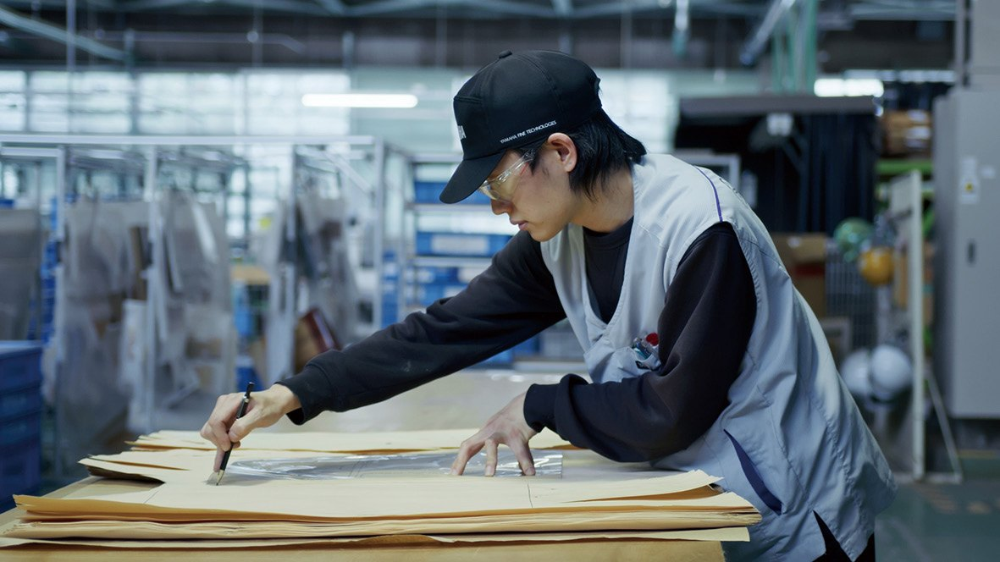
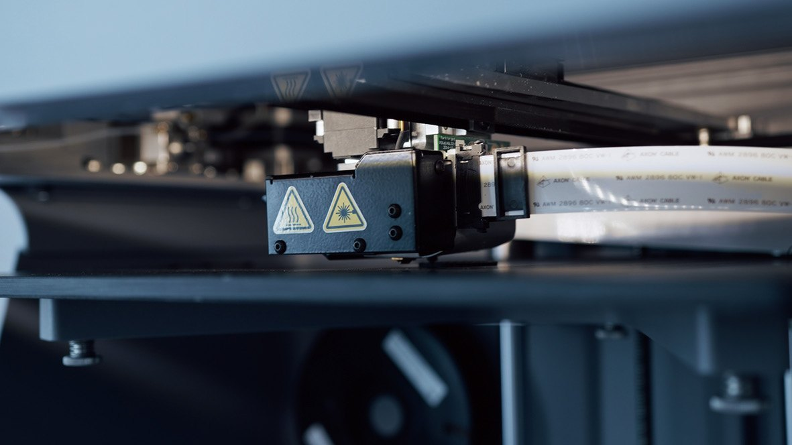
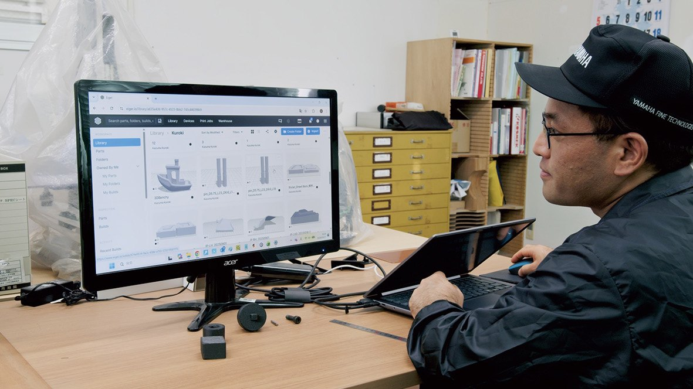
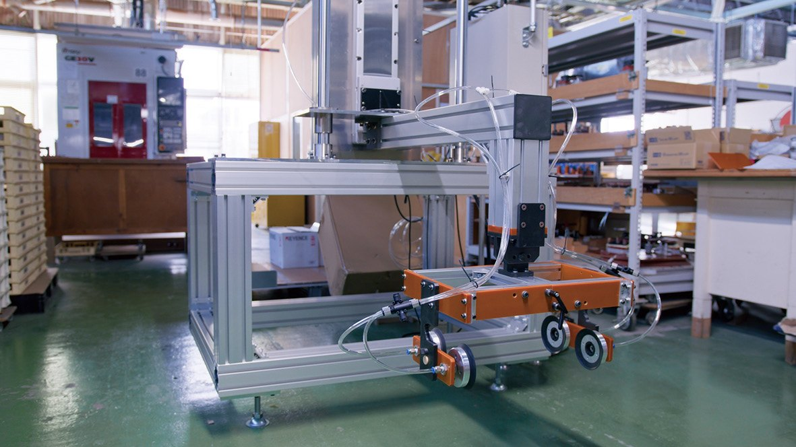

News & Insights

same-day updates on the shop floor
In the Markforged customer story "Sophisticated Production Systems With Yamaha Fine Technologies", Mr. Kuroki, who leads production engineering, explains that after the Markforged X7 arrived, the shop floor moved jig production in-house. Jig lead time fell from about 7 days to 1 day, with same-day turnaround in the shortest cases, and jig cost fell to about 25% of what it was.
"Even when improvement proposals were made, the long lead time before they could be implemented caused enthusiasm for the improvements to wane. I believe this was not merely a matter of time, but also led to a loss of learning opportunities for the organization as a whole."
Mr. Kuroki · Production Engineer, Yamaha Fine Technologies (from the Markforged customer story)The challenge
Natural wood, industrial tolerances, and equipment that must not stop
The company proposes design concepts to automakers, builds the processes that turn them into industrial products, and keeps interior parts in stable supply. Wood grain and appearance vary with source and conditions, so the work is to reconcile that variability with the dimensional accuracy, visual consistency and quality stability an industrial product needs, within tolerances measured to the decimal point.
Mr. Kuroki handles all on-site production engineering, from building and modifying the equipment for new lines to jig design and dimensional quality. "First and foremost, it's crucial to ensure the equipment never stops running." In mass production, a stop means not only restoration but post-restoration quality checks, setup changes and rework.

Before
One jig meant design, machining requests, procurement and waiting
"On the shop floor, every time jigs or auxiliary tools were needed, it generated man-hours and delays both inside and outside the company. It became a workflow, involving design, machining requests, procurement, and waiting for delivery, that we couldn't complete on our own. As a result, the time it took to implement improvements was a major challenge. Even when unexpected downtime occurred, we sometimes couldn't immediately secure replacement parts, causing delays in resuming operations."
Machining requires setup and the selection of tools and materials, which takes experience. That put a limit on how fast the PDCA cycle could turn without leaning on individual expertise. The company also had to dispel the idea that 3D printers are only for prototyping, with practical proof covering quality assurance and operations.

Selection
Why the X7: quality good enough for production equipment
The company first encountered Markforged at a trade show around 2019. "Of course, the fact that the quality was high enough to use jigs in actual production equipment, rather than just for prototyping, was a key factor. But another reason we considered them was that, among generally available products, Markforged was the only manufacturer that offered long-fiber carbon filament," says Mr. Kuroki.
Build size and the ease of Markforged's own slicer software also counted. Cheaper, smaller models were considered, but their build sizes were too small for jigs, so the team made the internal case for the X7. It did not go straight into mass production: they first made test pieces and spent about six months verifying what the machine could do and how to use it well.

On the floor
No parameter tuning: anyone can print usable-quality parts
Markforged's software comes with pre-optimized printing conditions and produces stable prints without parameter adjustments. "The fact that you can use it without having to think too much is a major advantage," says Mr. Kuroki. Too much freedom in settings leads to quality that varies with the user; here anyone can produce parts of consistent quality, which suits shop-floor use.
Parts now made in-house include positioning jigs, guides, temporary fixtures, inspection aids, protective covers, and wiring and piping guides. The team started with lower-risk applications whose benefits were easy to see and to scale, so colleagues could quickly understand the value of the investment. The X7 runs about 2,000 hours a year; three or four people operate it today, with more planned.
Lighter jigs are a key goal: some metal jigs weigh over 40 kg, and one jig that weighed 22 kg is now about 12 kg, which directly improves workability and safety.

Design thinking
From "must not break" to "easy to replace"
Jigs used to be designed on the premise that they must not break during production, to minimize the risk of sudden downtime. Now, in response to machine malfunctions and improvement suggestions from the floor, the company can release an update the same day. "We've shifted from designing with the assumption that it won't break to a mindset where parts that are prone to wear are designed to be easily replaceable from the start."
The company has also begun to rethink the shape of the jigs themselves, which, according to the case study document, had not been significantly revised for nearly 25 years. It is now verifying new jigs for production use, using the design freedom of additive manufacturing.

Next
From "making things quickly" to "reproducible operations"
Next, the company plans to shift its focus from making things quickly to reproducible operations: design standards, material selection criteria and evaluation methods for each jig category, in a framework that applies across the board. For low-volume optional parts it is considering resin printing instead of expensive molds. "In the coming era, I believe there are alternatives to spending millions of yen just to make molds."
"As lead times for automotive development as a whole grow shorter, the supply chain is required to quickly adapt to design and process changes. To address such unexpected external changes, maintaining a state where jigs and auxiliary tools can be quickly remade even during normal operations has become a critical factor in supporting quality, delivery times, and the stability of mass production."
Full case study (A4 · 6 pages)
The complete Markforged customer story: company background, challenges, selection and results. Traditional and Simplified Chinese translations by Markforged Greater China.
Assess in-house jig production
Tell us about your jigs and lead-time needs. Markforged engineers will assess materials and printers against your actual parts and can arrange a demonstration in Taiwan, China, Hong Kong or Vietnam.
Contact usSources
- Markforged customer story: Sophisticated Production Systems With Yamaha Fine Technologies (case study document 2026-07-30; video published 2026-08-20). Figures from the KPI summary in the case study document; quotes verbatim from it
https://markforged.com/resources/application-spotlights/sophisticated-production-systems-with-yamaha-fine-technologies - Markforged official YouTube video (Japanese audio)
https://www.youtube.com/watch?v=Hb8sox-zND4 - Images: Markforged customer story
Compiled by the Markforged Greater China & Vietnam team.
Back to the Media Hub · www.markforged.tw